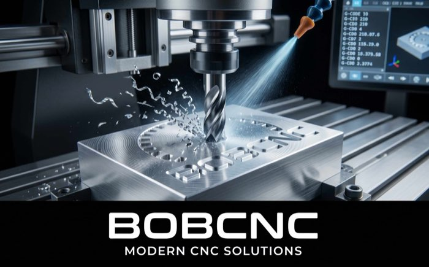

BOBCNC
Interface web embarquée pour fraiseuse CNC FluidNC
À propos de l'application
BOBCNC est un boîtier électronique autonome basé sur un ESP32-S3 qui se connecte à un contrôleur FluidNC pour piloter une fraiseuse CNC depuis n'importe quel navigateur (PC, tablette, smartphone).
L'interface web embarquée fournit un tableau de bord modulaire : chaque tuile ouvre une fonction métier (perçage, palpage & lamage hélicoïdal, découpe, surfaçage, poche, QR Code 3D, Taquin, contrôle direct, gestion des E/S, configuration machine, réseaux WiFi, mises à jour OTA, info développeur).
Contrôle CNC en temps réel
- DRO temps réel X/Y/Z/A avec parsing robuste WPos/MPos (priorité WPos, fallback MPos, gestion NaN)
- Jog manuel : pad directionnel 3×3 (XY + diagonales), Z/A séparés, pas 0.1/1/10/100 mm, vitesse 100-5000 mm/min
- Terminal FluidNC avec déduplication des « ok » et copie presse-papiers
- Barre de sécurité fixe en glassmorphism : STOP (Hold + Soft Reset), Unlock, Reset système
- Effet d'alarme visuel : la page entière pulse en rouge quand FluidNC est en état Alarm
- Offsets G54-G57 : lecture automatique au clic, bouton « Appliquer » qui copie la position DRO, popup de confirmation avant sauvegarde NVS
- GO TO sécurisé : séquence Z0 machine → XY offset → Z final, avec popup de confirmation
- Estimation temps d'usinage et indicateur d'origine pièce
Générateurs de G-code intégrés
- Perçage : grille de trous, débourrage par passes, détection chevauchement
- Palpage & Lamage hélicoïdal : palpage Z/X/Y/coins (compensation rayon bille), section accordéon de lamage avec choix outil, diamètre, profondeur, pas hélicoïdal, finition optionnelle, stats temps réel (tours, rayon, durée)
- Découpe : contours rectangulaires/circulaires avec passes successives
- Surfaçage et Poche : balayage paramétrable
- QR Code 3D : génération matrice à partir d'un texte/URL/WiFi, conversion en perçages, vérifications limites machine
- Envoi G-code en streaming WebSocket ligne par ligne, téléchargement
.nc, copie presse-papiers
Visualisations 3D & simulations
- Simulateur CNC isométrique : modèle STL du bâti BATITCNC, parseur G-code multi-G-word (G0/G1/G2/G3), gestion des offsets G54-G57, animation transparente quand l'outil est masqué
- Visu 3D du lamage hélicoïdal : enlèvement progressif de matière (plaque réellement creusée via ExtrudeGeometry), règle millimétrée X/Y/Z, trajet d'approche pointillé du zéro machine vers le zéro pièce, animation de l'outil avec contrôles Play/Pause/Reset/Speed
- Visu 3D du Taquin : ventouse pick & place Ø10 mm, rejoue la solution IDA*, succion verte/rouge, légende et progression
- Visu 3D QR Code : aperçu cellule par cellule de la matrice de perçage
Système & périphériques
- Tableau de bord réorganisable par glisser-déposer, mémorisé dans la NVS de l'ESP32
- Liaison FluidNC double : UART à 1 Mbaud (RX=2/TX=1) ou Telnet WiFi, avec bascule automatique et watchdog
- Pont série bidirectionnel UART1 ⇄ UART2 (FluidDial sur RX=42/TX=41) en pass-through non bloquant
- Écran e-Paper 2.7″ V2 (driver GxEPD2_270_GDEY027T91) affichant état de connexion, IP et statut FluidNC
- LED RGB NeoPixel sur GPIO 48 : violet pulsé (E-STOP), bleu pulsé (WiFi), vert (UART1+2 OK), orange (FluidNC seul), cyan (FluidDial seul), rouge pulsé (silence)
- IOManager : éclairage GPIO 4 (M64/M65 P1), aspiration GPIO 5 (P2), E-STOP soft GPIO 6 avec verrouillage logiciel
- Base d'outils CSV 12 champs (id, num_t, nom, diamètre, longueur, dents, avances, RPM, angle, remarque) avec import/export
- ATC 6 slots : tableau de magasin, changement d'outil automatique, persistance CSV
- Multi-réseaux WiFi stockés dans
reseaux.json, scan, mode AP de secours « BOBCNC_Setup », résolution mDNSbobcnc.local - Mises à jour OTA firmware et système de fichiers depuis le navigateur
- Mode Taquin : puzzle 3×3 résolu mécaniquement par la CNC avec ventouse pick & place
Architecture technique
- Microcontrôleur ESP32-S3 (PlatformIO + Arduino framework)
- Serveur web asynchrone (ESPAsyncWebServer) + WebSocket temps réel avec ré-assemblage robuste
- Système de fichiers LittleFS pour l'interface embarquée (HTML/CSS/JS/CSV/STL)
- Frontend HTML/CSS/JS vanilla avec GSAP et Three.js (importmap CDN, OrbitControls, ExtrudeGeometry, ArrowHelper)
- Préférences persistantes (NVS) pour la configuration, les outils et les offsets G54-G57
- Communication FluidNC en UART 1 Mbaud (Serial1) ou Telnet WiFi, avec watchdog 3 s
- Pont matériel UART1 ⇄ UART2 non bloquant pour FluidDial
- Modules C++ :
main.cpp,WifiManager,IOManager,ToolManager,ATCManager,LedManager,DisplayManager,TelnetClient
Développeur
Didier Dero
Conception matérielle, firmware ESP32 et interface web
BOBCNC — Interface embarquée © 2025